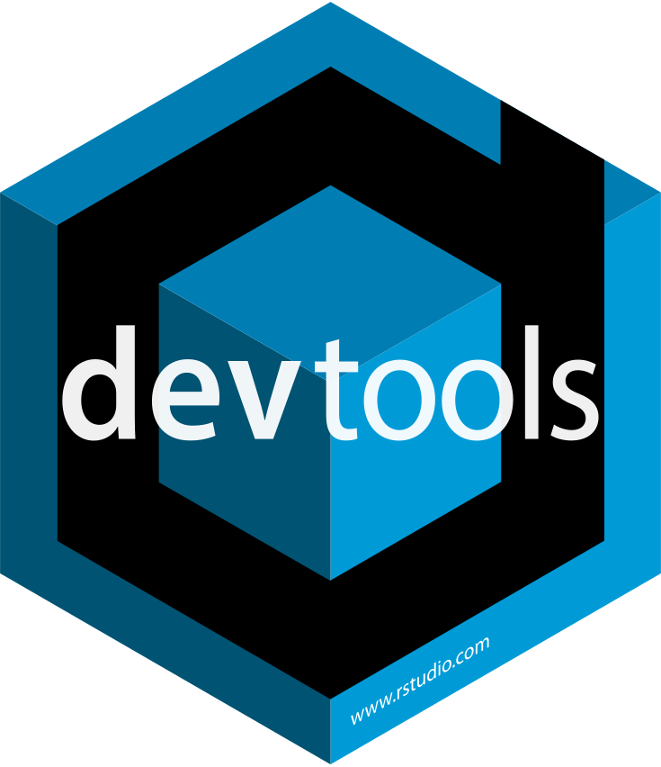
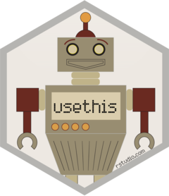
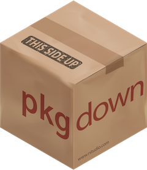

Error in `log()`:
! non-numeric argument to mathematical functionWarning in safe_log("a"): Can't compute the logarithm of a non-numeric input.NULL2026-08-10
You want to implement some statistical methods in R
You want to share some data or functions that you think are useful
Takes some time
The statistical method may already be implemented (~ 24,000 packages on CRAN)
Developing an R package covers many aspects. There is an entire book on the topic (available for free here).
This module will cover three parts:
Create a package: implement, document, export, and test functions
Share a package: put your package on Github, CRAN, make a website
Maintain a package: fix bugs, use Continuous Integration (CI)
At a minimum, a package must have two folders:
R: contains all the .R files where we will write our functions
man: short for “manual”. This will contain all the documentation that is accessible with ? in R (for example ?factor)
It is recommended to have the following folders:
tests: contains all the tests for your package
vignettes: additional documentation that contains more extensive examples and tutorials for your package.
The easiest way to learn how to make a package is to actually make one.
Let’s say we want to create a package containing two functions.
NULL if the input is not numeric:Error in `log()`:
! non-numeric argument to mathematical functionWarning in safe_log("a"): Can't compute the logarithm of a non-numeric input.NULLOur three best friends for this job:

devtools

usethis
testthat
Create a package called “my.pkg”:
devtoolsWe see the two mandatory folders: R and man.
The DESCRIPTION file contains all the important information about our package:
The NAMESPACE file contains all the information about the functions that are imported and exported by our package.
Remove R/hello.R and man/hello.Rd
Create two files in the folder R: n_unique.R and safe_log.R.
Paste the functions we created in each of these files.
Run devtools::load_all() in the console.
You should now be able to run our functions in the console!
Next steps: documenting and testing our functions.
The documentation of a function is done in the .R file: it will then automatically be converted to an .Rd file placed in the man folder.
There is no need to create an .Rd file yourself!
Writing the documentation is similar to writing comments, but you need to use #' (with an apostrophe) instead of #.
Tip
To automatically generate the documentation structure for a function, put your cursor inside the function, and press:
Ctrl + Alt + Shift + R
@param is the description of the expected input (there can be several @param tags).
@return is the description of what this function returns.
@export indicates whether this function should be exported, i.e be available to the user of this package.
@examples gives some examples that show how the function works.
Let’s now run devtools::document() to create the .Rd file.
You should have this message:
Let’s delete the file NAMESPACE and re-run devtools::document().
You should then be able to access the documentation of our function with ?n_unique.
TODO: update picture
We have the minimal documentation but you can make it much bigger:
You can write a longer description below the title;
You can write long explanations about a statistical method or other things with the tag @details after the parameters.
and much more…
Warning
The help page is the first thing users will check to learn about your functions.
Give details and examples!
Testing a package is crucial.
Having tests reassures:
the user: it shows that you (the developer) have checked that your function produces the correct results, at least in basic cases.
yourself: it ensures you can add functionalities to your package or fix bugs without breaking your existing code.
Testing is made much easier by the package testthat1.
To start using this package, run:
✔ Setting active project to '/home/etienne/Bureau/Git/misc/my.pkg'
✔ Adding 'testthat' to Suggests field in DESCRIPTION
✔ Setting Config/testthat/edition field in DESCRIPTION to '3'
✔ Creating 'tests/testthat/'
✔ Writing 'tests/testthat.R'
• Call `use_test()` to initialize a basic test file and open it for editing.This created a folder called tests:
We can now add tests files in tests/testthat.
Go back to the file n_unique.R and run usethis::use_test(). This will create a file test-n_unique.R containing an example of test.
Two main things:
test_that(): contains the title of the test and the code for the test
expect_*(): the expectations you have for the test.
Example:
Try to make sure your function covers corner cases!
There are many helper functions for your expectations:
expect_length()expect_type()expect_named()expect_warning()expect_error()Some tests shouldn’t be run all the time:
skip_if_not_installed()skip_if_offline()Two options:
devtools::test()We now have some tests in our package, but do they cover all function arguments? All possible use cases?
This is hard to know because users will always find new annoying interesting bugs.
We can use the package covr to see how much of our package is covered by tests:
We have seen how to run tests, but we can now perform a more thorough check with devtools::check() (or the button “Check” in the “Build” pane).
This will check that:
you use all of your dependencies
all of your examples can run
all your tests pass
and much more
We now know the basics of a package: how to create one, document it, and test it.
But creating a package is not only that. There are plenty of choices to make, such as:
how should I name my functions?
what dependencies should my package have?
The NAMESPACE file contains the list of functions that your package exports.
When someone loads your package with library(my.pkg), all exported functions will be imported in the environment.
In the (very likely) event where this person uses several packages, there can be a namespace conflict if two packages (or more) provide two functions with the same name.
It is also possible that some of your functions have the same name as functions included by default in R.
For example, dplyr overwrites several functions:
While the user has some means to fix such conflicts (e.g see the package conflicted), you should do your maximum to avoid them.
In particular, be very careful that your functions don’t have the same names as other functions in popular packages (e.g data.table, tidyverse packages, etc.).
Advanced: S3 methods.
Have you ever wondered how summary() worked with so many outputs? Or print()? Or plot()?
summary() is an S3 method that gets dispatched according to the class of its input.
EXPLAIN MORE ON S3 METHODS?

When you develop your package, you can import other packages, either because they provide essential features or simply because they make the development easier.
However, these dependencies have a cost:
they make your package more fragile: changes in these dependencies also affect your package;
they force users to have these dependencies [IS IT REALLY A COST?]
Therefore, you have to find the right balance:
dependencies are not a bad thing per se
but they increase the maintenance burden and the risk of failure in the long run.
This might seem abstract, so let’s take an example. Suppose that for one reason or another, your package uses the function select_vars() from the package dplyr.
This function was removed in dplyr v. 1.1.0.
This has implications for the user of your package:
if their version of dplyr is < 1.1.0, it still works fine;
if their version of dplyr is >= 1.1.0, then the function in your package that uses select_vars() will error.
Having dependencies forces you to stay aware of changes in these dependencies and this increase the maintenance burden.
Having a package is cool but it’s much less useful if you keep it for you1.
There are two main, non-exclusive ways to share your package to the world:
Git and Github are useful tools for code sharing, which means they’re perfect to share an R package.
This is not a Git tutorial, I’ll “just” show how to connect Git and Github to RStudio.
If this is already done, skip the next two slides.
Download and install Git.
Connect Git and RStudio:
in RStudio: Tools > Global Options > Git/SVN > Git executable > Browse > Find your installation of Git
it should probably be similar to mine: “C:/Users/etienne/AppData/Local/Programs/Git/bin”
If necessary, create an account on Github.
In RStudio, run usethis::use_git_config(user.name = "<YOUR NAME>", user.email = "<YOUR EMAIL>") 1
Now you need a token that will be stored in RStudio so that Github knows that RStudio has the right to push code to your repositories. You can create one with usethis::create_github_token() (you can also change the expiration date).
Generate the token and store it in RStudio with gitcreds::gitcreds_set().
Restart RStudio.
Doesn’t work? More info at Happy Git with R.
CRAN
Comprehensive R Archive Network
Where packages are stored (around 20,000 packages currently).
Put a package on CRAN:
CRAN has strict rules in terms of formatting or testing, but that shouldn’t worry you:
there are some collaborative todo lists before submitting to CRAN, such as this one
there are a lot of packages to make your life easier (urlchecker, spelling, etc.)
We could stop here, but we can add something more: a website!
And no, it won’t (or rather shouldn’t) take long.
We’re going to use an amazing package to build a package website in a few minutes: pkgdown

Before putting the website online, we can already create locally with pkgdown::build_site().
This takes care of everything:
Once you have a website, you can include it in the DESCRIPTION file.
Check the name of your package: check that there’s not already a package with the same name with available::available()
Check the name of your functions: avoid name conflicts with functions from very popular packages
Reduce the number of dependencies
Test your package
If you have a statistical package, get peer-reviewed with rOpenSci Statistical Software Peer Review